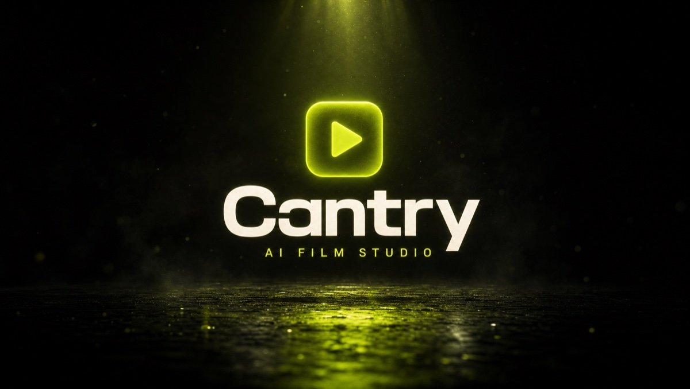

How to get cited by ChatGPT, Claude and Perplexity in 2026 — a hands-on playbook (and the myths to skip)

A week ago, if you asked ChatGPT, Perplexity or Claude about my product, you got nothing. To them, it didn't exist.
So I did the work to change that. Hands-on, on a live site (cantry.ai). Here is the honest playbook: what actually moves the needle, and the popular "AI SEO" advice I ignored.
Let's start with the shift. Search is turning into answers. People don't scroll ten blue links anymore. They ask, and a model replies with a short recommendation. If your brand isn't in that answer, you don't exist. This is GEO (Generative Engine Optimization), and in 2026 it's table stakes.
The myths most "GEO gurus" get wrong
Myth 1 — "Add an llms.txt file and you're optimized." Google's own 2026 guidance is blunt: you do not need llms.txt, special AI markup, or content "chunking" to show up in its AI features, because Google Search doesn't use them (Google Search Central). Do it because it's cheap, not because it's a strategy.
Myth 2 — "AI search is a brand-new game, forget SEO." The opposite. AI answers are built on top of classic retrieval: no search foundation, no citation. Strip away the hype and your normal search visibility is still what gets you pulled into the answer (see Kevin Indig's cross-engine breakdown in State of AI Search Optimization 2026).
The fact almost nobody acts on: ChatGPT leans heavily on Bing. In one analysis of 500+ citations, roughly 87% of ChatGPT's cited sources matched Bing's top organic results — versus about 56% for Google (Seer Interactive). If you are not in Bing, you are effectively invisible in ChatGPT, no matter how good your page is.
Honestly, I almost skipped Bing. Who uses Bing, right? Then it clicked: ChatGPT basically runs on Bing's index under the hood, and that one fact rewrote my whole plan.
What I actually did, in order
- Get crawlable by the RIGHT bots — the binary must. Most sites accidentally block the search crawlers. I explicitly allowed
OAI-SearchBot(ChatGPT),Claude-SearchBot, andPerplexityBotin robots.txt. Block these and you simply will not appear. Full stop. - Get into the indexes. Verified the site in Google Search Console and Bing Webmaster Tools, submitted the sitemap, and used IndexNow (plus Cloudflare Crawler Hints) to ping the engines the moment anything changes. The homepage was crawled and indexed by Google within a day.
- Make the facts machine-readable. LLM crawlers don't run heavy JavaScript, so the key facts must be in the HTML, not injected by JS. I server-rendered the core content, wrote a crisp "what is it" definition and an FAQ in the exact question-to-short-answer format models lift verbatim, and added JSON-LD (Organization, SoftwareApplication, FAQPage) with
sameAslinking every real profile so engines treat it all as one consistent entity. - Earn trust (E-E-A-T). Real named author, real numbers, visible "last updated" dates, primary-source links. No fabricated claims, because engines reward verifiability and lying gets you demoted.
The honest part most won't tell you: the timeline
Perplexity can cite new, well-structured content within days to a few weeks; it searches in real time. ChatGPT takes longer, roughly 1 to 3 months for branded queries and 3 to 6 for competitive category terms, because it leans on accumulated mentions. Anyone promising "cited overnight" is selling something.
And the biggest lever people underinvest in: off-site. Engines cite third parties heavily — Reddit, YouTube, earned media, reputable directories. A page on your own site says "we're great." Independent sources naming you in the category are what make a model actually recommend you. On-site is the floor; off-site is the ceiling.
I'm doing all of this in the open on Cantry (cantry.ai). It's an AI film studio I built that turns a single link into a finished cinematic short: script, AI voiceover, visuals, original AI music, and the edit, end to end. The same approach already grew the channels it powers to 50M+ views and 120K+ followers in six months, with $0 ad spend. Now I'm making the product itself discoverable by the engines people actually ask.
If you're building anything in 2026: being on Google is no longer enough. You have to be in the answer.